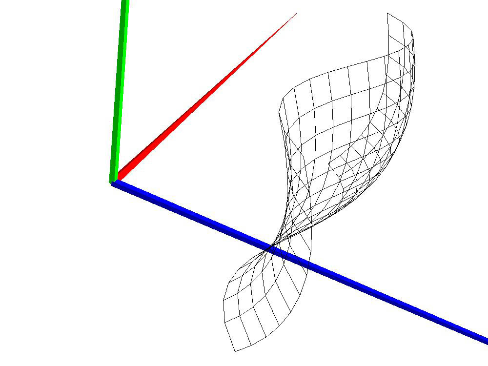
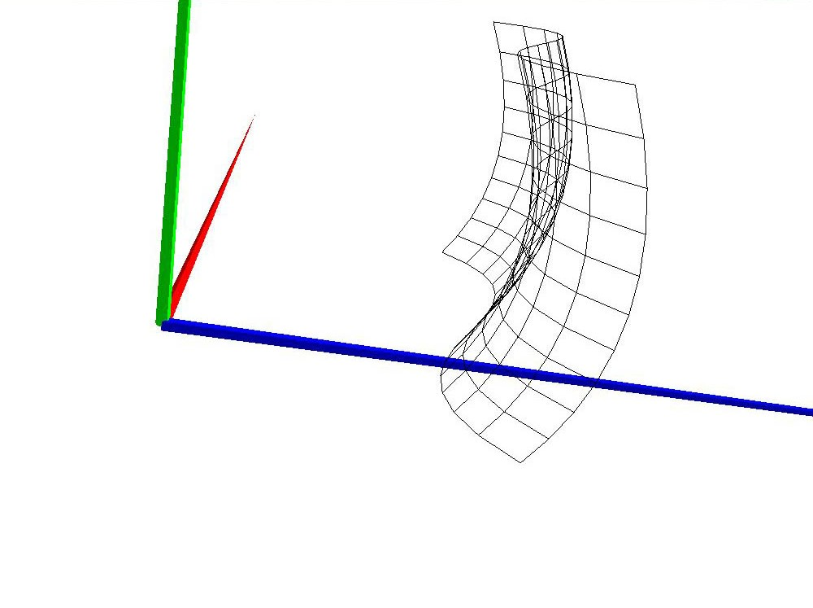
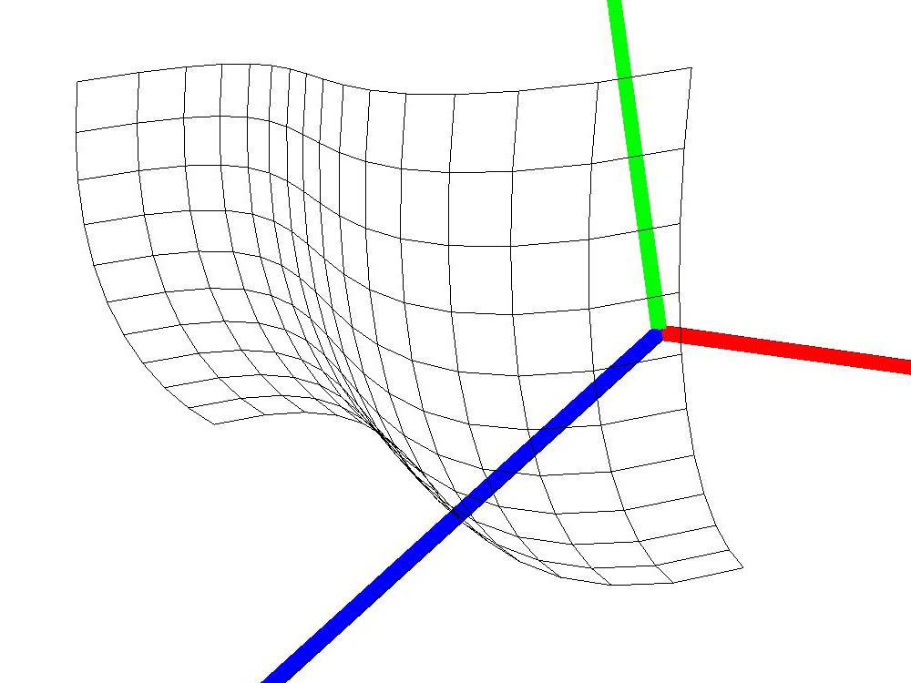

Laboratório de Aplicações com Interface Gráfica
MIEIC – 2015/2016
Avaliação individual após
Trabalho T2
(duração: 2:30 horas + 0:30 de tolerância)
O presente enunciado diz respeito a uma prova de avaliação prática da
unidade
curricular LAIG e contém um conjunto de três desenvolvimentos a
efetuar sobre
a base de trabalho desenvolvida no trabalho T2 das aulas práticas. Os
computadores das salas reservadas para a prova encontram-se privados de
rede. O
único acesso permitido é ao software "SIGEX" para efeitos de upload dos
trabalhos realizados (http://sigex.fe.up.pt;
a validação é a normal do FEUPSIG).
Introduzir o "Código Público do Exame"
correspondente:
| Sala |
Sist.
Oper. |
Cód.
Público |
| B207 |
Windows |
PSQ442 |
| B208 |
Windows |
SMB848 |
| B213 |
Windows |
AIO848 |
| B213 |
Linux |
SHH035 |
O resultado é uma página onde pode ser encontrada alguma
informação assim
como facilidades de upload
de
ficheiros.
Instruções para Upload
Siga cuidadosamente as seguintes instruções:
- Use sempre como base o código
original do trabalho T2
(não resolver um problema proposto sobre a solução do problema
anterior).
- Assinale no
próprio código as
secções que alterou para resolver o problema, com um ou mais comentários do
tipo (dependendo do problema que está a resolver):
- //LAIGPROB1_inicio, //LAIGPROB1_fim;
- //LAIGPROB2_inicio, //LAIGPROB2_fim;
- //LAIGPROB3_inicio, //LAIGPROB3_fim.
- Para cada problema, crie um ficheiro de texto ident.txt, contendo:
- Identificação do estudante (número e nome),
- Identificação do Grupo,
- Situação da resolução do problema em questão: "prob.
completo", "não considera o detalhe xpto", "não resolvido"...
- Algumas
instruções julgadas pertinentes para o funcionamento do software,
nomeadamente a forma de identificar o ficheiro "teste.lsx"
- Arquive os seguintes ficheiros num ficheiro .zip com o nome
"prob1.zip"... "prob3.zip" (esta regra de nomeação deve ser
ESTRITAMENTE seguida, sem espaços nem extensões
diferentes de .zip):
- o ficheiro ident.txt;
- o código-fonte,
incluindo o próprio index.html
de arranque;
- um ou mais ficheiros LSX necessários
para demonstrar a resolução do problema em questão;
- todas as texturas utilizadas.
- Cada problema, tendo em atenção o ponto anterior, deverá
ser
arquivado num diretório independente ("prob1",... "prob3") e cada um
destes, comprimido em um ficheiro "prob1.zip", ... "prob3.zip".
- Cada ficheiro obtido "prob?.zip" deverá ser sujeito a upload utilizando
as facilidades do SIGEX.
Notas:
- Para efeito de teste, garanta que, após arrancar o
servidor, o browser
usa o endereço 127.0.0.1:8080 (se necessário altere).
- Cada ficheiro "prob*.zip" deverá, isoladamente, ser sujeito
a upload utilizando as facilidades do SIGEX.
- Caso não
tenha resolvido um problema, deve submeter na mesma o respetivo
ficheiro .zip, nem que contenha apenas o ficheiro ident.txt com a
indicação de não-resolução. Isto é, no final, deve ter sempre três
ficheiros submetidos: prob1.zip, prob2.zip, prob3.zip.
- Os identificadores finais dos arquivos serão construídos
pelo sistema SIGEX, acrescentando-lhes um prefixo igual ao
identificador do
estudante respetivo.
- O sistema SIGEX permite eliminar ficheiros submetidos
erradamente, e/ou submeter ficheiros com o mesmo nome, que serão
sobrepostos aos existentes.
Enunciado - Novas funcionalidades sobre o trabalho T2
1. Nurbs
(6 valores)
Crie uma superfície curva usando NURBS de acordo com as seguintes
regras:
- Em ambas as direções a ordem da curva deve ser a mínima que
garanta a forma que é apresentada na figura 1.
- Numa das direções, a ordem deve ser tal que garanta uma
curva com um único máximo/mínimo (curva em forma de "U"); na outra
direção, a ordem deve ser tal que garanta uma curva com dois
máximos/mínimos (curva em forma de "S").
- A superfície curva deve apresentar 10 divisões na
direção da curva em "U" e 15 divisões na direção da curva em "S".
- Represente de forma bem visível, numa cena LSX, uma
instância desta superfície curva.
- Na linguagem LSX a superfície deve ser declarada da
seguinte forma:
<LEAF id="ss" type="patch" orderU=”ii”
partsU=”ii” orderV=”ii” partsV=”ii” >
<controlpoint x=”ff” y=”ff” z=”ff”
/>
…
</LEAF>
Escreva um ficheiro de teste que, ao nível da geometria, isola uma
superfície curva que cumpra com as características enunciados neste
problema (a superfície deve ter uma textura aplicada). O ficheiro deve
ainda conter uma ou mais fontes de luz, caracterizadas de modo a
possibilitar uma fácil observação das características da superfície.
  
Fig. 1 - Exemplo da
superfície curva vista de diferentes perspetivas.
2. Animação (7 valores)
Desenvolva um processo de animação no qual:
- À semelhança do que foi desenvolvido nas aulas, um objeto
se desloca segundo uma trajetória linear composta por um vector de
pontos de controlo durante um tempo de duração, em segundos.
- Simultaneamente, o objeto roda em torno de si próprio, de
um certo ângulo, segundo o seu eixo vertical, à medida que avança ao
longo da totalidade da trajectória; prevê-se que a rotação total possa
corresponder a um ângulo superior a 360º, ou seja, mais do que uma
volta completa.
- Na linguagem .LSX, a animação deve ser declarada da
seguinte forma, em que "rotation" – um atributo opcional – representa o
ângulo total, em graus, de rotação segundo o eixo vertical do objecto,
desde o início e até ao final de uma sequência de animação composta
pelos vários pontos de controlo:
<animation id=”ss” span=”ff”
type=”linear” rotation=”ff”>
<controlpoint
xx=”ff” yy=”ff” zz=”ff” />
...
</animation>
Escreva
um ficheiro de teste que, ao nível da geometria, isola um objecto a
realizar a animação linear seguinte (se não usou ficheiros LSX, proceda
de forma a obter efeito equivalente); o objeto deve ser escolhido de
forma a evidenciar bem o movimento, nomeadamente ao nível da rotação:
<animation id=”teste” span=”4”
type=”linear” rotation=”720”>
<controlpoint
xx=”0” yy=”0” zz=”0” />
<controlpoint
xx=”10” yy=”0” zz=”0” />
<controlpoint
xx=”10” yy=”0” zz=”10” />
<controlpoint
xx=”0” yy=”10” zz=”0” />
<controlpoint
xx=”0” yy=”0” zz=”0” />
</animation>
3. Shaders (7 valores)
Altere os shaders utilizados para o terreno, de forma a representar uma
superfície de mar (água com ondulação), com uma margem em areia (ver
fig. 3.a) numa única
geometria baseada no plano/terreno desenvolvido para o TP2.
Para representar o mar, deve usar a "textura" e mapa de
"alturas" fornecidos (figs. 3.b e 3.c). Para a margem de areia deverá
adicionar suporte para uma terceira textura - "máscara"
de areia - que terá uma parte com areia, e outra preenchida a
preto (ver fig. 3.d). Essa textura deverá ser usada nos shaders da
seguinte forma:
- Nos pontos em que o valor da componente vermelha da máscara
for inferior a 0.2
(zona preta), os shaders devem comportar-se como originalmente
(superfície de água modificada e texturada de acordo com o mapa de
alturas e textura de água (respetivamente).
- Nos restantes pontos, os shaders devem modificar a
superfície para ter a altura correspondente ao ponto médio dos limites
teóricos de altura da ondulação, e colorir os fragmentos usando as cores da máscara.
Para suportar este novo tipo de primitiva, caso esteja a usar LSX, deve
criar a seguinte tag:
<LEAF id="ss" type="maskedterrain"
texture="ss" heightmap="ss" mask="ss" />
"NOTA:
Garanta que a solução submetida carrega por omissão um ficheiro que
contenha APENAS esta primitiva, e de forma bem visível."
 |
 |
 |
 |
| a)
- Resultado pretendido |
b)
- Textura |
c)
- Alturas |
d)
- Máscara |
Fig 3 - O Shader a
desenvolver
Porto e FEUP, 18 de novembro de 2015
A. Augusto de Sousa,
Jorge Barbosa,
Rui Rodrigues,
Alexandre Carvalho